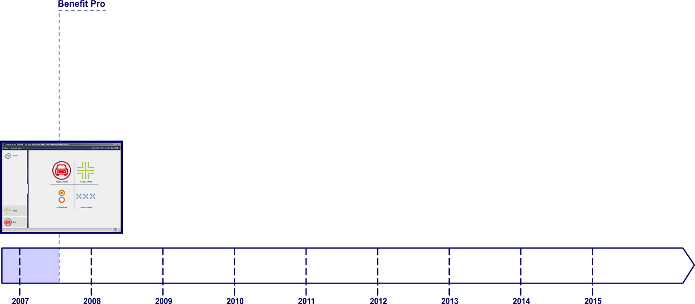
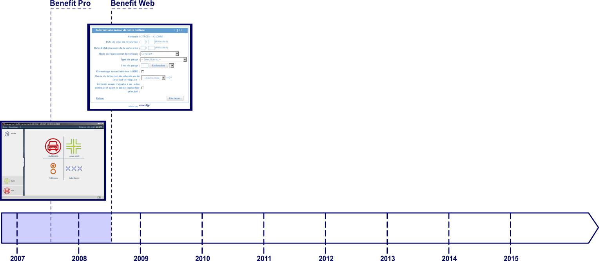
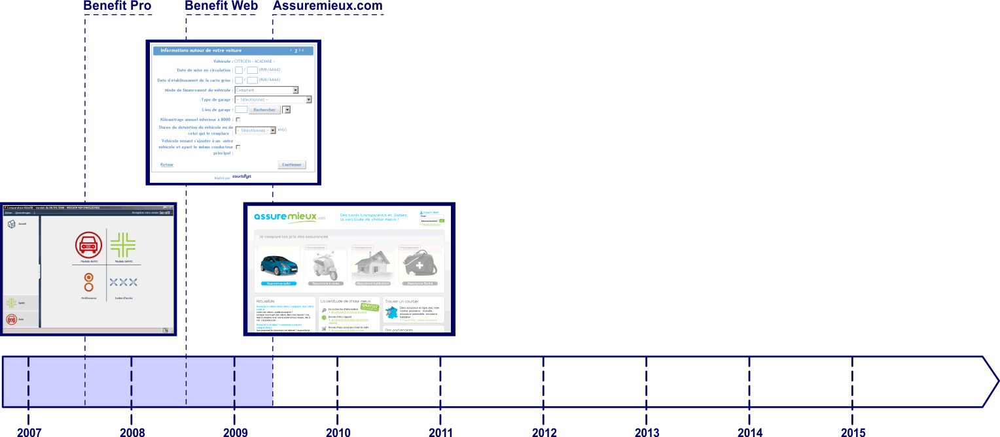
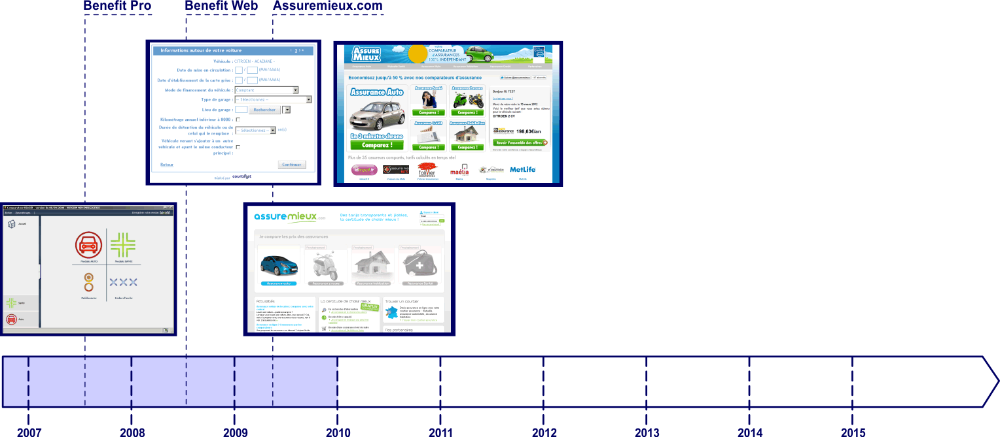
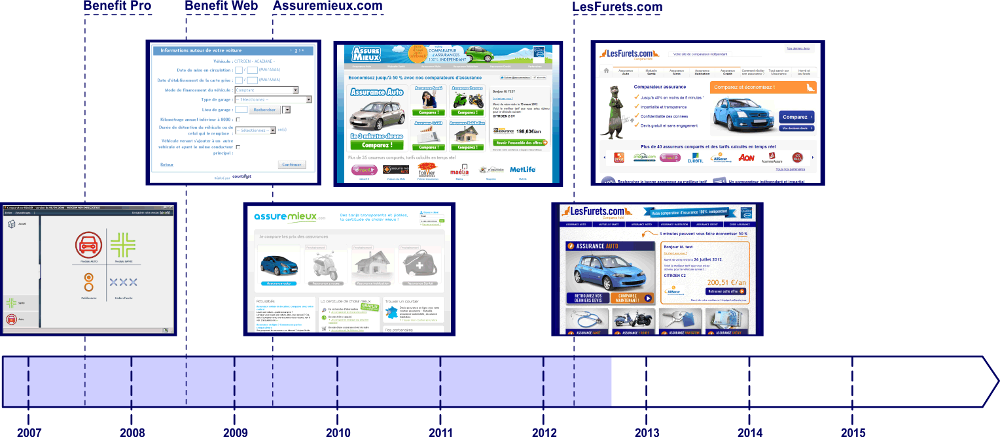
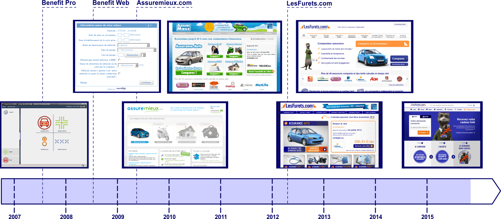
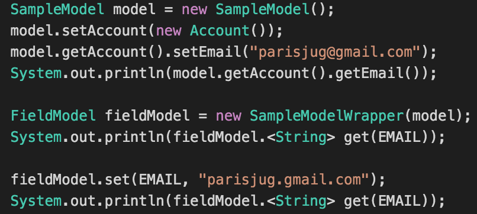
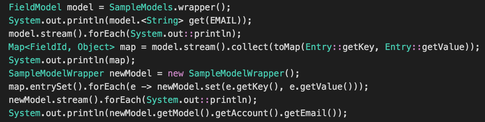
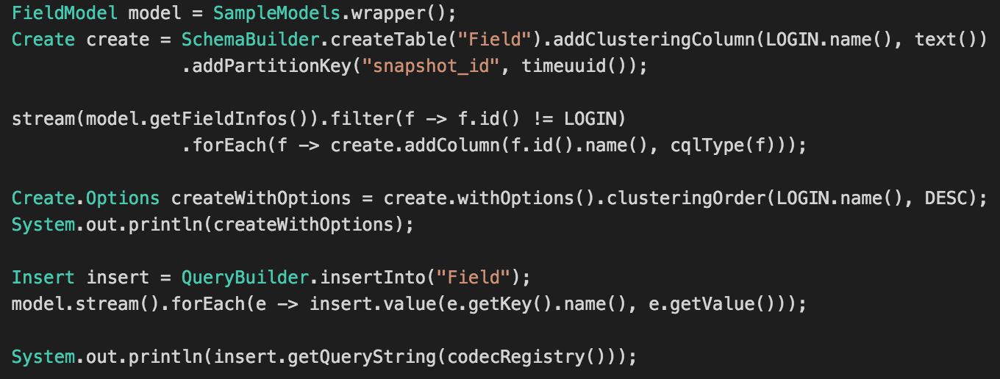
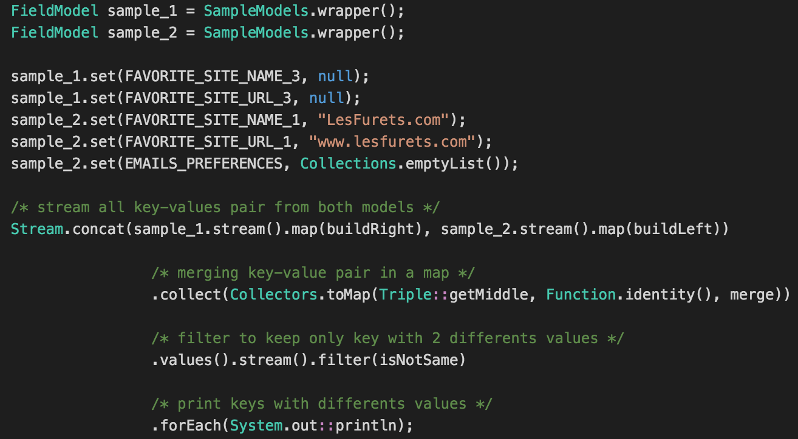

@gdigugli – Gilles Di Guglielmo
- Designer of sweet cooked software since 1999
- Software Architect at LesFurets.com
@ozangunalp – Ozan Gunalp
- PhD in Computer Science
- Full Stack Developer since 2010
- Software Engineer at LesFurets.com
Sept 2007 - Broker Desktop Application

Sept 2008 - Broker Website Widget

Jun 2009 - Broker Directory : Assuremieux.com

Jan 2010 - Insurance Aggregator

Apr 2012 - New brand : LesFurets.com

Sep 2012 - First TV advertising

Sep 2015 - Toys Launch


- 1 website, 5 Insurance Products : Car, Health, Home, Bike, Loan
- 1 codebase, 450k lines of code, 60k unit tests, 150 selenium tests
- 20 Developers, 2 DevOps, 4 Architects
- 20 production servers including Load balancers, Frontend, Backend, Databases, BI
- 1 release per day
- 9 years of code history
- 2.5M quotes/year, 31% of market share
Domain Model, what do you mean ?

What you have ...

What you want ...

Que faire ?

Architect at work ...

Keying everything !

Live code 1 : Introduction to key value API

Live code 2 : Mixing with java.util.Map

Live code 3 : Tag filtering

Live code 4 : Generate CQL

Live code 5 : Diff two models

Where we use it at LesFurets.com
- Simple UI binding by replacing JSON model by a Dictionary (80% less code)
- Use JSON Dictionary for client/server RPC
- Batch and ETL with an email provider (90% less code)
- Persistence in cassandra (from scratch with 200 lines of code for a whole model)
- Injecting user data in selenium (40% less code)
- Mocking our domain model in thousand of unit tests
... everything in iterative fashion during the past 2 years.
Future and ideas
- Push as OSS our Cassandra serialisation code
- Push some Spark samples
- JEP 276: Dynamic Linking of Language-Defined Object Models
We need a new name ?
- Model-Map is cool, keep it
- YAMF: Yet Another Mapping Framework
- OWKF: Obi Wan Kenobi Framework
- Submit your ideas
Model-Map available on Github
- http://github.com/lesfurets/model-map
- Framework and examples
- Apache Licence
- Try it and contribute !
Thank You!